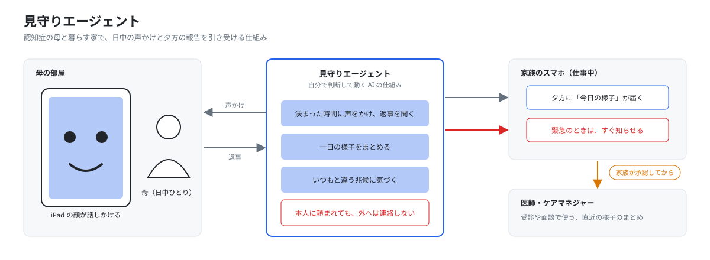

自宅に認知症の母がいて、家族は日中、仕事で家を空けます。ちゃんと食べたか、薬を飲んだか、着替えができたかが分かりません。同じ質問の繰り返しが増えているのかも、毎日見ていると逆に分からなくなります。
市販の見守り製品は、動いたか、映ったか、押したか、を家族に伝えます。生きているかは分かりますが、何を話し、どんな様子だったかは残りません。受診やケアマネジャーの面談で「最近どうですか」と聞かれても、家族はうまく答えられません。
朝6時に、エージェントは家族が登録した予定（デイサービスや通院）を読みます。それをもとに、その日に声をかける時刻と内容を決めます。家族はLINEでその内容を見て承認し、母の部屋のiPadを一度タップします。その後の操作は要りません。
日中は決まった時間に声をかけ、返事を聞いて記録します。夕方18時に一日の会話をまとめ、家族のLINEに今日の様子として届けます。文ごとに、根拠になった会話へ飛べます。
「痛い」「転んだ」といった言葉や、声かけに2回続けて返事がないときは、すぐ家族に知らせます。同じ質問の繰り返しが何日も続くような変化は、緊急とは分けて「確認してほしい」と伝えます。
機能を並べる前に、家族が今いちばん困っている一つを確実に解きます。それが朝の着替えの確認です。着替えができたかを、会話の返事で確かめます。
声かけは責めない言葉で行い、呼び方も家族が決めます。返事があれば記録し、「まだ」や無反応なら少し置いてもう一度だけ声をかけます。それでも確認が取れないときだけ、家族に知らせます。
カメラは使いません。映像を撮らないので、着替えの姿が誰にも見られず、本人の言葉だけが材料になります。この流れが動けば、薬や水分の確認も同じ形で増やせます。
自分で判断して動く仕組みほど、どこで止まるかを先に決めておく必要があります。この仕組みでは、外へ連絡する前に必ず止まり、家族に確かめます。止まる場所は、連絡の相手によって3段階に分けています。
家族への通知と夕方の報告は自動で送ります。医師やケアマネジャーへの共有は、家族が画面で中身を確かめてからだけ送ります。本人に「電話して」と頼まれても外へはかけず、家族に「こう頼まれました」と伝えます。
加えて、家族の画面には「今すぐ止める」ボタンと、この仕組みができること・できないことの一覧を置きます。音声は要約したあとに捨て、本人の言葉を丸ごとは残しません。
エージェント：決められた手順をなぞるのではなく、状況を見て自分で判断して動くAIの仕組み。
今日の様子：夕方に家族へ届く一日のまとめ。文ごとに根拠の会話へ飛べる。
確認してほしい：緊急ではないが、家族に確認を促す知らせ。断定はしない。
承認：医師やケアマネジャーへ共有する前に、家族が中身を確かめて許可すること。